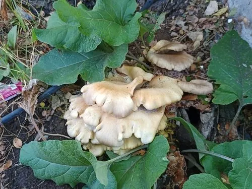

真菌 · 真菌界
平菇 Pleurotus ostreatus

平菇菌盖呈扇形或贝壳状，丛生于枯木上，栽培容易、产量高，是家庭菜园和工厂化栽培的常见食用菌。
- 分类
- 门担子菌门纲伞菌纲目伞菌目科侧耳科属侧耳属
- 栖息环境
- 阔叶树枯木、树桩与人工菌袋，喜温暖湿润、通风良好
- 地理分布
- 北半球温带广泛分布，现中国各地普遍栽培
- 保护级别
- 暂无评估（栽培食用菌）
物种志
平菇是担子菌门伞菌目的木腐真菌，子实体丛生或叠生。菌盖呈扇形、贝壳状或半圆形，直径 5–15 cm，表面灰白、灰褐至深褐色，光滑，边缘常内卷；菌肉白色，柔韧；菌褶白色至淡黄色，延生于菌柄；菌柄侧生或偏生，短粗，基部有白色绒毛；孢子印白色至淡紫色。不同品种颜色差异较大，有灰白、灰褐、蓝灰等。
平菇野生于阔叶树的枯倒木、树桩上，靠分解木质素和纤维素生长，适应性强，是我国栽培最广泛的食用菌之一。它可用棉籽壳、玉米芯、秸秆等农业废弃物作培养料，栽培技术简单、周期短，适合家庭和小规模种植。平菇肉质柔嫩，味道鲜美，可炒食、做汤、涮火锅；富含蛋白质、多糖和多种维生素，其中维生素 B 族和麦角固醇含量较高，晒干后麦角固醇可转化为维生素 D。
形态与习性
- 菌盖扇形或贝壳状，直径 5–15 cm
- 菌褶白色至淡黄色，延生于菌柄
- 菌柄侧生或偏生，短粗
- 孢子印白色至淡紫色
- 栽培棉籽壳、玉米芯与秸秆作培养料
- 生长周期较短，从接种到出菇约 1 个月
- 营养富含蛋白质与麦角固醇
趣味知识
- 平菇的菌盖像层层叠起的贝壳，常从枯木侧面成丛长出。
- 用棉籽壳和玉米芯就能种平菇，是秸秆资源化利用的好帮手。
- 平菇晒干后，其中的麦角固醇可转化为维生素 D，营养价值提高。